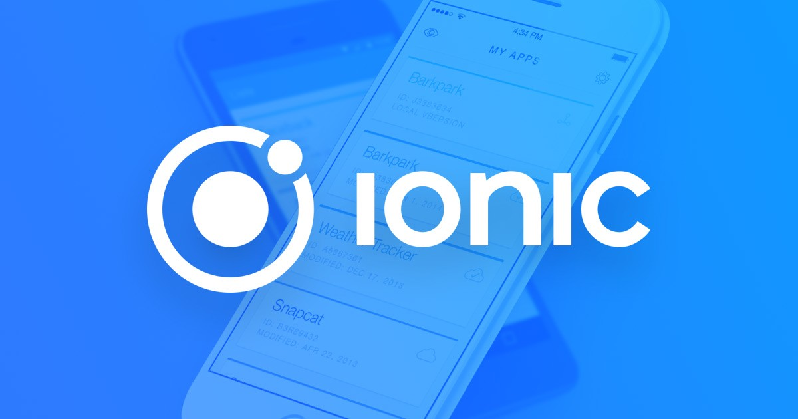
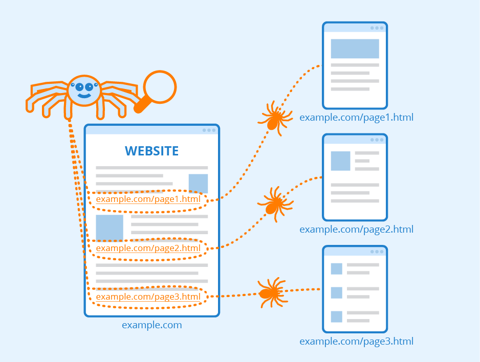
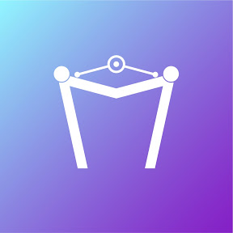
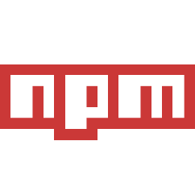
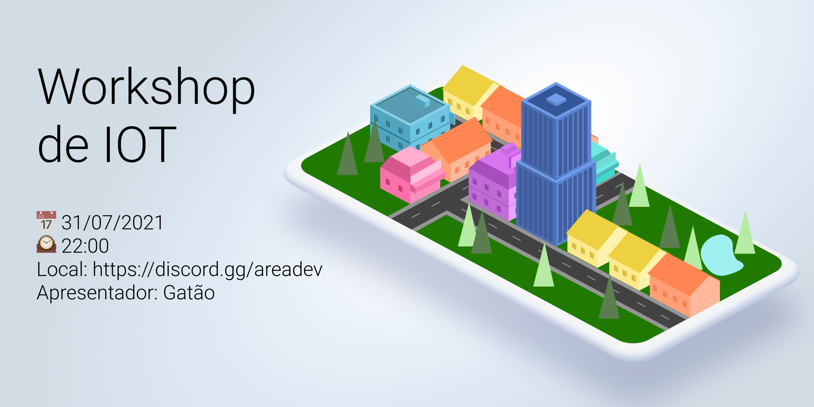

API com banco de dados e upload de arquivos no Node.js
api que gerencia transações bancarias com migrations e gerenciamento de arquivos
Tecnolonia: NodeJS, Multer, TypeORM, TypeScript
Fundamentos React Native
app que gerencia transações bancarias
Tecnolonia: React Native ,TypeScript
Fundamentos do ReactJS
site que gerencia transações bancarias
Tecnolonia: ReactJs, TypeScript
Fundamentos NodeJS
api que gerencia transações bancarias
Tecnolonia: NodeJS, TypeScript
Conceitos do ReactJS
site listar, adicionar, remover os repositórios
Tecnolonia: ReactJs
Conceitos NodeJS
Esta aplicação armazena os repositórios do seu github, podendo criação, listr,
atualização e remoção dos repositórios, e além disso permitir que os repositórios possam
receber "likes".
Tecnolonia: NodeJS
Conceitos do React native
App que listar e curti os repositórios
Tecnolonia: ReactJs
API RESTful
API RESTful desenvolvida com c# e ASP.NET Core
Tecnolonia: C#, MySQL

App Ionic
App de agendamento de carros para test driver
Tecnolonia: Ionic
Monitoramento de sites
Este programa lê os sites dentro do arquivo Sites.txt e inicia o monitoramento destes,
enquanto gera um arquivo log.txt para registrar as informações.
Tecnolonia: GO
Impressora 3D
Código fonte da minha impressora 3D montado partir de um forked do firmware marlin.
Tecnolonia: C++
Apps desenvolvidos com React native desenvolvidos no curso da Udemy: Desenvolvedor
Multiplataforma Android/IOS com React e Redux.
APP1: é um app que gera numeros randômicos APP2: é um app de freses do dia
APP3: é um app que joga pedra, papel e tesoura com você APP4: App que consome
api APP5: App de uma empresa APP6: App
cara ou coroa
Tecnolonia: React native

Web-Crawler
Uma web crawler é um IA que capturam informações de sites. São muito usados por
buscadores como o google, Yahoo, DuckDuckBot entre outros.
Tecnolonia: Python
Projeto do curso da Udemy: Curso Completo do Desenvolvedor NodeJS e MongoDB.
Este programa é um site responsivo conectado com o banco Mysql criado na estrutura MVC.
Feito com o objetivo de ser um portal de notícias.
Tecnolonia: NodeJS, CSS, EJS, MySql

1º Hackathon 7MTech
Foram desenvolvidos dois jogos, o primeiro foi inspirado no Flappy Bird e o segundo no
jogo do dinossauro do google.
Desenvolvido por: Gabriel Simon Gianotti, Luis felipe mello goulart, Rafael Junqueira
Santos, Jessé Satlei Souza Carvalho
Tecnolonia: HTML, CSS, JavaScript

react-native-honeywell-printer-RP4A
Este pacote NPM faz a comunicação entre o react native e as impressoras RP4A
Tecnolonia: JS, ZPL
Study Effect
Fiz este repositório com a intenção de fazer animações com HTML, CSS e JS. Para
aprofundar meus conhecimetos.
Tecnolonia: HTML, CSS, JS

workshop oit
Este pacote NPM faz a comunicação entre o react native e as impressoras RP4A